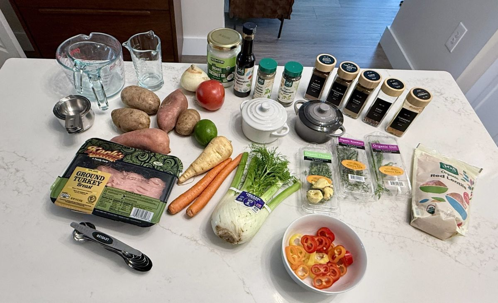
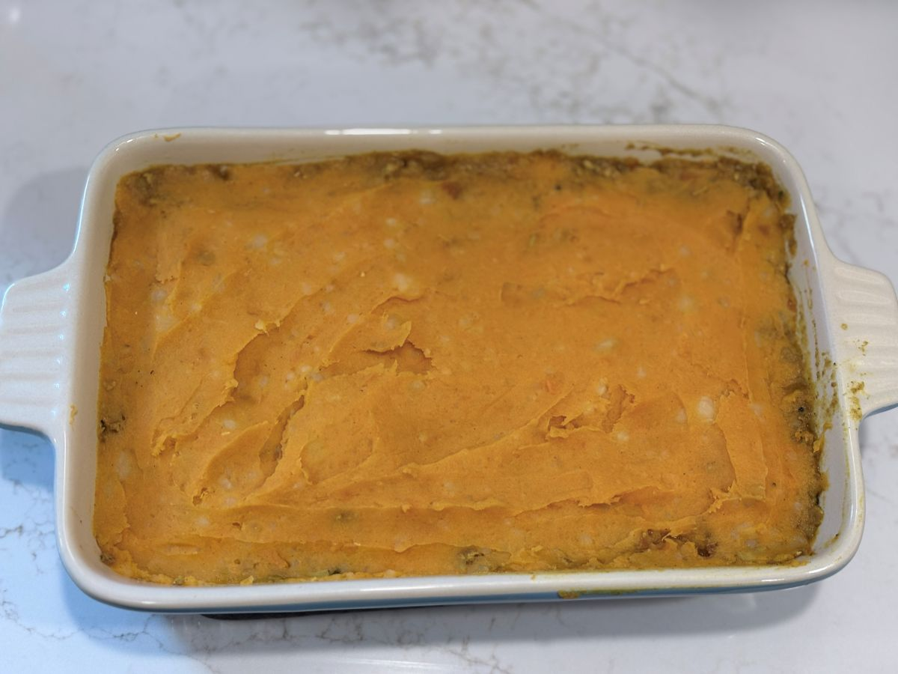

It all started with a late-afternoon scroll through Instagram. A post caught our eye pointing straight to Indian-Spiced Shepherd's Pie | Nigella's Recipes | Nigella Lawson, and the visual alone had us hooked—rich, aromatic gravy bubbling up against a peak of golden, textured mash. There was just one small catch for our kitchen: the original called for ground lamb, and since we don’t eat red meat, a straight carbon copy was off the table.
But that’s the beauty of cooking at home. An inspiring idea isn't a rigid rulebook; it’s an invitation to step up to the cutting board, be a little brave, and adapt. We set out to convert her framework into a lean, deeply flavorful ground turkey and red-lentil version that felt true to our rhythm.

Pantry Adaptations & Sourcing Realities
Translating a recipe from page to pantry always involves a bit of improvisational alchemy. Nigella’s original calls for specific whole Indian spices and whole white peppercorns. When we raided our spice cabinet and hit the local market, white peppercorns were nowhere to be found.
Rather than letting sourcing hurdles stop dinner, we adapted on the fly—utilizing quality ground spices and whole black peppercorns in the potato boil. Sautéing raw ground spices directly in warm coconut oil for 60 seconds bloomed their essential oils effortlessly, laying down a fragrant foundation without requiring hard-to-find whole seeds.
The Great Sweet Potato Peeling Breakthrough
Another technique recommendation from the original recipe was boiling sweet potatoes with their skins on, aiming to slip them off after cooking. In practice? It turned out to be an impossibly messy, finger-scalding endeavor, picking out stubborn shreds of hot skin before ricing.
Our verdict: peel them first! Peeling the sweet potatoes before chopping and submerging them in cold water infused with cracked cardamom pods, peppercorns, and lime peel strips made the entire process seamless, clean, and far more enjoyable.
Pantry Pivots & Scaling the Mash
When it came time to shoot our step-by-step photos, we ran into a classic home-cook dilemma: we simply didn't have enough sweet potatoes in the pantry. Unwilling to let a good cooking session stall, we pivoted and combined two sweet potatoes with standard russet potatoes.

If you notice a marbled, varied orange tone in our pre-bake photos above, that is why! It serves as a great reminder that home cooking is flexible. That first batch also taught us that 5 pounds of potatoes wasn't quite enough to give our 8x12-inch baking dish the thick, towering crown we craved. In our final master recipe, we scaled up to 5–6 pounds of sweet potatoes to guarantee a plush, high-rimmed crown.
Ginger Discipline & When a Dish "Sings"
In our initial trial, enthusiasm got the better of us and we grated fresh ginger into both the meat base and the potato crown. While ginger is a miraculous root—celebrated for its warming properties and digestive benefits—too much raw bite competed with the delicate cardamom and cumin.
By refining our ginger discipline—keeping grated ginger strictly in the turkey ragù and wringing pure, fiery ginger juice through cheesecloth into the sweet potato mash—every layer clicked into place. As Nigella so aptly puts it, the flavors didn't just harmonize—they began to sing.
Sitting down to a hot bowl on a cool evening, this dish felt extraordinarily special. This Spiced Indian Shepherd’s Pie beautifully bridges my Scottish heritage and classic UK pub comfort with the vibrant, warming spice architecture of India—making for an unbeatably cozy, hearthside meal.
Ready to bring this to your table?
Get the exact recipe and step-by-step instructions for our Indian-Spiced Turkey Shepherd’s Pie →